Donc avant qu'on entre et qu'on commence réellement à utiliser ceci, je vais expliquer ce qu'il y a de nouveau avec Nano Banana. Aussi, c'est quoi ce bordel avec ce nom ? Ça a l'air ridicule. Et je vous promets que je vais passer à travers ça très rapidement parce que je sais que vous voulez le voir en action. Parmi les principales choses à mentionner ici, c'est que nous avons l'édition basée sur un seul prompt. Donc on lui dit essentiellement quoi changer avec du langage naturel, comme par exemple ajouter une bibliothèque, et il va effectivement l'ajouter à l'image. Nous pouvons prendre une image existante que nous avons, ou nous pouvons lui faire générer une image et ensuite ajouter des choses à cette image générée, si c'est clair. Ensuite, c'est probablement la partie la plus importante, la cohérence des personnages est phénoménale donc essentiellement nous pouvons pratiquement soit télécharger un
Interface & Outils : Interface vidéo avec incrustation d'image (picture-in-picture) montrant une image générée par IA.
Contenu textuel & Code : Image illustrative d'une femme peintre dans un atelier avec une étiquette "Artist".
Action / Démonstration : Présentation visuelle d'un exemple généré par intelligence artificielle pour illustrer le sujet abordé.
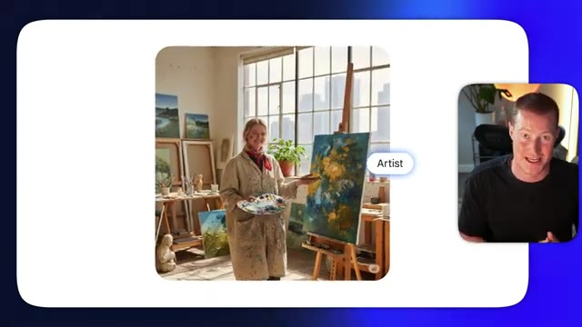
🔍 Agrandirimage d'un personnage ou générer l'image d'un personnage et y apporter des modifications ou créer différentes images à partir de cela et il conserve cette cohérence de personnage que beaucoup de ces autres modèles d'images n'ont tout simplement pas et je vais vous montrer exactement ce que je veux dire dans cette vidéo ensuite nous pouvons réellement fusionner plusieurs images ensemble et il est très doué pour faire cela non seulement il est doué pour avoir une sorte de cohérence de personnage mais il est doué pour fusionner des photos et garder vous savez des parties spécifiques d'une image et ensuite fusionner cela avec autre chose. Ensuite nous avons un rendu ultra rapide. Je parle de deux à cinq secondes pour qu'il génère réellement une modification et donne un
Interface & Outils : Interface de génération d'images IA avec superposition vidéo du présentateur en médaillon.
Contenu textuel & Code : Prompt textuel : "Create an image where the woman in the photo is cuddling the dog on a basketball court" et image générée correspondante.
Action / Démonstration : Démonstration de la génération d'une image basée sur un personnage cohérent avec modification de scène.
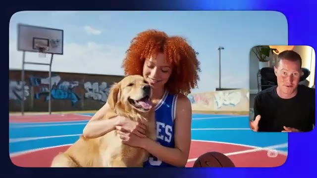
🔍 Agrandirrésultat pour vous. C'est assez époustouflant. Si vous utilisez ChatGPT, la génération d'images prend une éternité. C'est extrêmement rapide et ça m'épate honnêtement. Ensuite, nous avons des connaissances du monde réel grâce à Gemini. Donc notre modèle d'image comprend réellement les choses. Vous pourriez dire, hé, je veux que tu génères une image qui a l'air de dater de l'époque de l'Empire romain et il va extraire des images de l'Empire romain et comprend le contexte et tout le reste.
Interface & Outils : Navigateur web affichant un article de documentation technique Google for Developers.
Contenu textuel & Code : Texte de présentation de Gemini 2.5 Flash Image, modèles de génération et d'édition d'images par IA.
Action / Démonstration : Le présentateur commente l'actualité et les fonctionnalités des nouveaux modèles d'intelligence artificielle de Google.
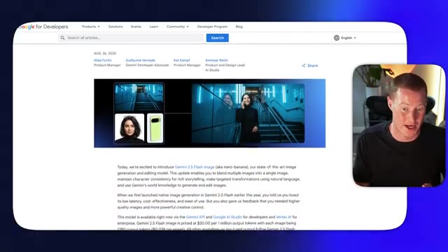
🔍 AgrandirTout cela ensemble fait de celui-ci un modèle de génération d'images vraiment percutant et c'est de loin le meilleur que j'ai vu. Je suis donc impatient de vous montrer ce que je veux dire maintenant. Très bien, je suis donc à l'intérieur de Gemini ici et je vais vous montrer exactement à quel point il est facile de commencer à utiliser la génération d'images Nano Banana dès maintenant. Tout d'abord, ce que je vais faire, c'est donner un exemple de cas d'utilisation ici même. Je vais pratiquement télécharger cette image que j'ai trouvée de ce type et de son chien.
Interface & Outils : Navigateur web affichant l'interface utilisateur de Google Gemini.
Contenu textuel & Code : Page d'accueil de Gemini avec message personnalisé "Hello, Brock", barre de saisie de prompt ("Ask Gemini"), icônes d'outils et sélecteur de modèle (2.5 Flash).
Action / Démonstration : Le présentateur introduit l'interface de Google Gemini à l'écran pour montrer la plateforme en direct.
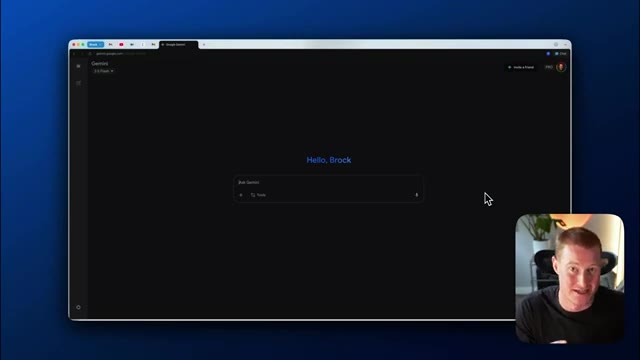
🔍 Agrandir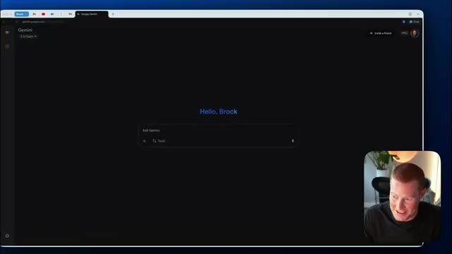
🔍 AgrandirVoici donc cette image, et ce que je vais faire, c'est que je vais littéralement me contenter de dire : remplace le chien par un lion. Je vais donc venir sur Gemini, remplacer ce chien par un lion, en lui donnant littéralement une consigne aussi simple que ça. Et regardez à quelle vitesse il est capable de générer une modification de cette image exacte. Boum. Et voilà, ça a pris environ cinq secondes. Regardez cette image ici. Je vais afficher un avant et un après pour que nous puissions voir exactement à quel point elle est similaire. Très bien. Nous avons donc un avant sur le côté gauche et un après sur le côté droit. C'est pratiquement la même image. Et c'est pourquoi la nouvelle génération d'images Google nano banana est en fait époustouflante.
Interface & Outils : Interface web Google Gemini et visionneuse d'images macOS.
Contenu textuel & Code : Invite de commande textuelle "Replace this dog with a lion" et affichage côte à côte des images source et générée.
Action / Démonstration : Modification d'une image en remplaçant un chien par un lion via une simple consigne textuelle.
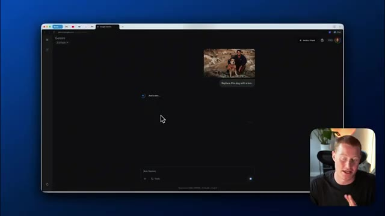
🔍 Agrandir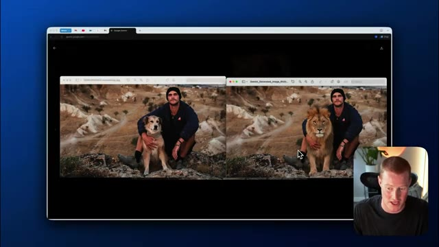
🔍 Agrandirparce que la cohérence des personnages et la cohérence dans la capacité à modifier une photo exacte sont assez fous. Donc ensuite, ce que je vais faire, c'est que je vais venir dans un nouveau chat ici et j'ai un cas d'utilisation amusant. Donc en fait, j'étais juste en voyage au Portugal. J'ai obtenu certaines de ces photos argentiques incroyables. Très bien. Voici donc quelques-unes des photos argentiques que j'ai réellement prises quand j'étais au Portugal et regardez-moi faire des modifications dessus. Donc tout d'abord, prenons cette image ici de moi avec ce petit décor. Et je vais fondamentalement changer complètement cette image et faire comme si j'étais de l'époque de l'Empire romain. Je vais donc télécharger ceci sur
Interface & Outils : Navigateur web (Google Gemini), macOS Finder, Visionneuse d'images.
Contenu textuel & Code : Interface utilisateur de Gemini, photos personnelles de voyage au Portugal, gestionnaire de fichiers. [DESC_IMAGE_3] Présentation d'images de voyage et ouverture d'une interface de chat IA.
Action / Démonstration : Explications face caméra et analyse conceptuelle des marchés.
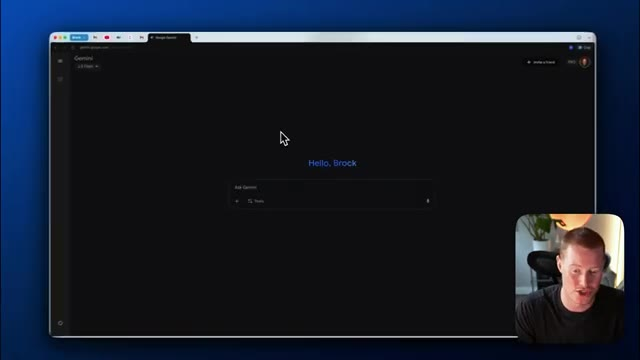
🔍 Agrandir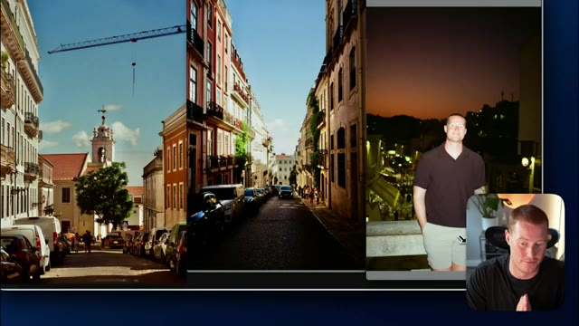
🔍 Agrandir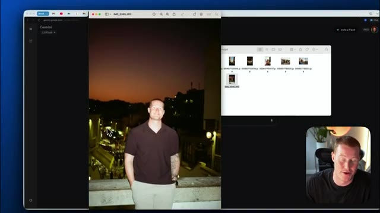
🔍 AgrandirGemini. Je vais essentiellement dire, prends cette image et fais du fond l'Empire romain. Encore une fois, je lui donne un prompt super simple. Et en gros, en cinq à dix secondes, nous allons obtenir ici un résultat de cette modification de fou. Et assurez-vous de regarder cette vidéo jusqu'à la fin, parce que je vais expliquer exactement pourquoi c'est un tel bouleversement et comment ça va tout changer. C'est parti. Nous avons exactement la même image ici, mais maintenant on dirait que je suis, tu sais, en train de regarder un décor qui est l'Empire romain.
Interface & Outils : Interface web de Google Gemini (gemini.google.com) avec incrustation vidéo du présentateur en bas à droite.
Contenu textuel & Code : Importation d'une photo et prompt utilisateur : "Take this image and make the background the Roman Empire" avec un indicateur de chargement "Just a sec...".
Action / Démonstration : Saisie du prompt de modification d'image et attente de la génération du résultat par l'intelligence artificielle Gemini.
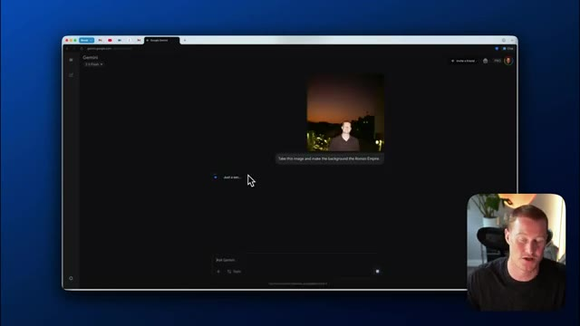
🔍 AgrandirL'une des choses vraiment géniales avec ça, c'est que ça a réellement cette connaissance que Gemini possède sur le monde. Donc c'est capable de comprendre à quoi ressemble même l'Empire romain ? Ça extrait donc tout ce contexte de là et est capable d'apporter ces modifications à nos images. Très bien, voici donc un autre cas d'usage. J'ai cette photo de moi tenant un Diet Coke. Et ce que je vais faire, c'est que je vais donner ça à Gemini et en gros lui dire : prends cette image, mais remplace la canette de Diet Coke par un Diet Pepsi.
Interface & Outils : Navigateur web affichant l'interface de l'intelligence artificielle Google Gemini.
Contenu textuel & Code : Interface utilisateur de Gemini avec des zones de texte "Ask Gemini" et l'affichage d'images générées ou modifiées par l'IA.
Action / Démonstration : Navigation et présentation des capacités de modification d'images de Gemini intégrant des contextes historiques.
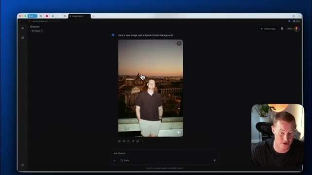
🔍 Agrandir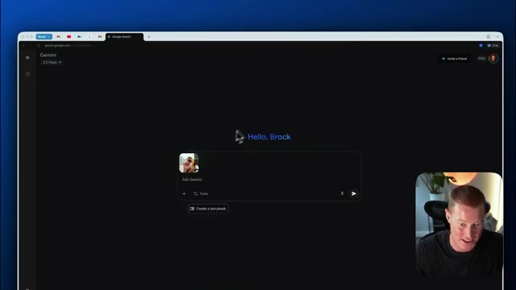
🔍 AgrandirTrès bien, donc je lui dis essentiellement de prendre cette image exacte et de remplacer la canette par un style de canette différent. Et c'est aussi simple que ça, nous avons exactement la même image, mais au lieu que je tienne une canette de Diet Coke, cela me montre en train de tenir du Diet Pepsi. C'est assez fou. Très bien, alors ensuite, je vais vous montrer comment cela pourrait potentiellement être l'avenir des mannequins et de la façon dont nous présentons réellement les vêtements et différents produits en ligne.
Interface & Outils : Navigateur web affichant l'interface de Gemini Google avec des images générées par IA.
Contenu textuel & Code : Interface utilisateur de Gemini avec aperçu d'images générées et zone de saisie de prompt.
Action / Démonstration : Le présentateur commente la modification d'éléments spécifiques sur une image générée par IA.
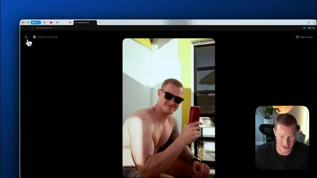
🔍 AgrandirDonc voici cette image de cette fille qui porte cette robe rouge. Je vais télécharger ça ici. Et j'ai aussi cette image de cette robe bleu clair que je veux en fait faire porter à ce modèle. Donc je vais télécharger cette image également. Viens sur Gemini et dis essentiellement, prends cette image du modèle portant la robe rouge, mais à la place, fais-lui porter la robe bleue. Donc ça devrait essentiellement modifier cette image exacte, mais en la faisant porter cette robe bleue.
Interface & Outils : Interface web de Google Gemini.
Contenu textuel & Code : Zone de saisie de texte avec miniatures d'images importées.
Action / Démonstration : Téléchargement et ajout successifs d'images de vêtements dans l'interface de l'intelligence artificielle pour une manipulation ultérieure.
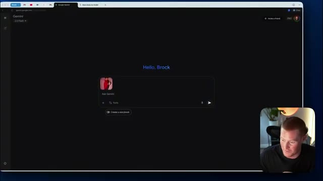
🔍 Agrandir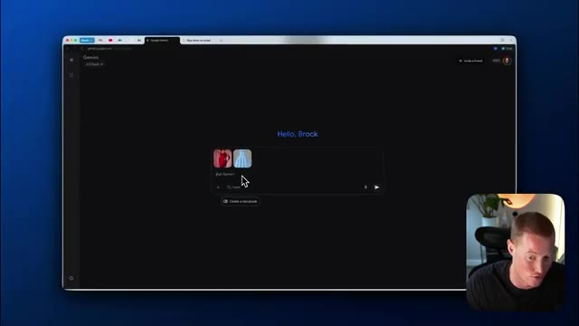
🔍 AgrandirEt voilà, nous avons cette image. La cohérence des personnages est parfaite. Voici l'image de la génération que nous avons réellement créée. Et ensuite, laissez-moi vous montrer l'image que nous avons réellement téléchargée ici. Nous avons donc exactement le même modèle. Elle a exactement la même apparence, la même pose et tout le reste, à part qu'elle porte cette robe que nous avons réellement téléchargée. Et puis, à partir de là, ce que je vais dire, c'est : super, maintenant prends cette image et montre-la dans une pose différente, sous un angle différent.
Interface & Outils : Navigateur web affichant l'interface de Google Gemini et le bureau Mac.
Contenu textuel & Code : Interface de chat IA de Google Gemini, invites de modification d'image, images générées de mannequins en robe.
Action / Démonstration : Comparaison visuelle entre l'image originale téléchargée et l'image générée par l'IA pour démontrer la cohérence du personnage.
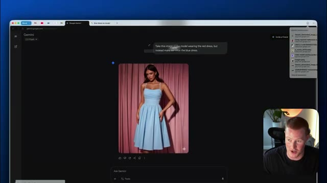
🔍 Agrandir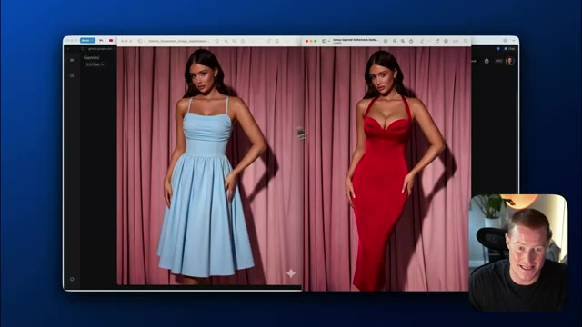
🔍 Agrandir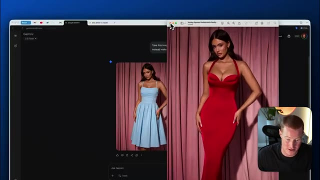
🔍 AgrandirEt voilà. Nous avons exactement le même modèle et la même robe, mais maintenant sous un angle différent. Disons simplement qu'on prend cette même image exacte, mais je veux que l'arrière-plan soit de couleur rouge clair. Boum, les gars, voilà. C'est assez époustouflant quand on y pense vraiment, car maintenant nous pouvons commencer à créer des images avec une cohérence de personnage incroyablement bonne.
Interface & Outils : Interface web de Google Gemini (navigateur).
Contenu textuel & Code : Interface de chat avec une image générée montrant une femme portant une robe bleue dans une pose différente, illustrant la modification d'angle.
Action / Démonstration : Le présentateur commente la génération d'images modifiées par l'IA sous différents angles.
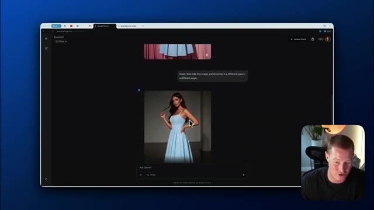
🔍 AgrandirEt ça va changer le commerce électronique et la façon dont nous concevons, vous savez, les séances photo, les mannequins et le marketing de produits, et cetera. Très bien, maintenant ce que nous allons faire, nous allons prendre cette miniature de Mr. Beast et je vais essayer de recréer exactement la même chose avec une image de moi-même. Donc ce que je vais faire, je vais simplement télécharger une sur Gemini et ensuite je vais la télécharger avec cette image de moi-même. Et je vais fondamentalement dire, prenez cette image miniature de Mr. Beast et remplacez-la par cette image exacte de moi-même.
Interface & Outils : Navigateur web avec l'interface de Google Gemini.
Contenu textuel & Code : Invite de texte et affichage d'une image de miniature YouTube (Mr. Beast).
Action / Démonstration : Sélection et manipulation d'une image pour démonstration dans l'outil d'IA.
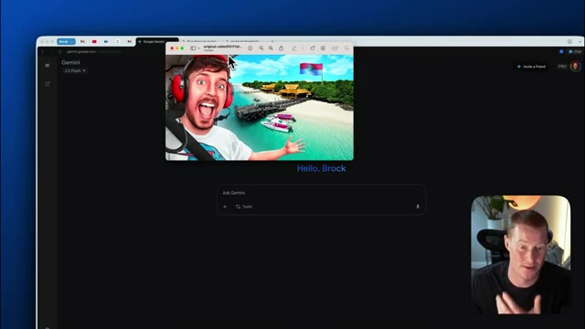
🔍 AgrandirTrès bien, voilà ce que ça nous a donné. Ce n'est pas parfait. Vous pouvez voir qu'il a juste superposé mon visage sur le sien. On peut encore voir un petit peu de son visage derrière, mais c'est plutôt cool. Si je peux faire un changement ici, ça va probablement le régler. Ça a l'air bien, mais retirez le casque derrière ma tête. Ça n'a pas l'air correct. Une chose que je tiens à mentionner ici, les gars, c'est que comme vous l'avez vu dans cette vidéo, les modifications que ça demande, ça prend seulement genre cinq à dix secondes max.
Interface & Outils : Navigateur web, interface de Google Gemini.
Contenu textuel & Code : Conversation avec Gemini affichant une image générée avec le visage du présentateur superposé.
Action / Démonstration : Le présentateur commente le résultat de la génération d'image par l'IA sur Google Gemini.
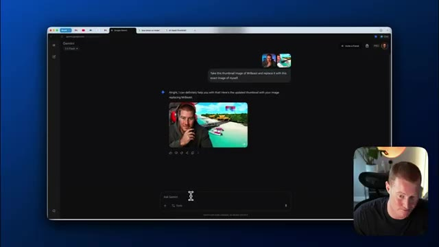
🔍 AgrandirC'est vraiment, vraiment rapide. Et c'est assez époustouflant de voir à quel point c'est rapide. Et c'est une amélioration massive par rapport à quelque chose comme la génération d'images de ChatGPT. Très bien, le voilà. Ce n'est toujours rien d'extraordinaire, mais je suppose qu'on teste les capacités dans cette vidéo. Très bien, un autre cas d'utilisation auquel j'ai pensé, c'est que je déménage dans environ une semaine. Et voici un exemple de l'à quoi ressemble le salon d'après l'annonce Zillow.
Interface & Outils : Navigateur web, interface de l'outil d'intelligence artificielle Gemini (Google).
Contenu textuel & Code : Interface utilisateur de Gemini affichant une conversation avec une image générée (« My apologies for that oversight... ») et un champ de saisie texte (« Ask Gemini » / « Hello, Brock »).
Action / Démonstration : Présentation et test en direct de l'outil Gemini avec affichage des résultats visuels générés par l'IA.
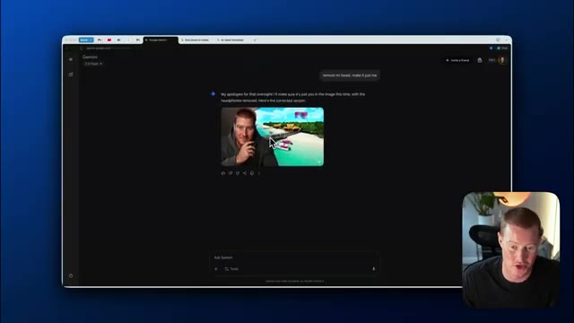
🔍 Agrandir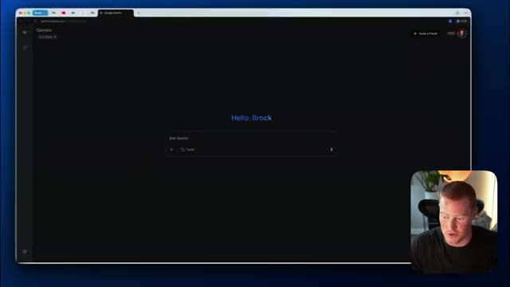
🔍 AgrandirDonc je vais télécharger cette image et en gros dire, prends cette image de ce salon, utilise exactement les mêmes meubles, mais je veux que tu le rendes encore plus chaleureux. Donc voyons ce qu'il peut faire ici. Juste pour me donner une idée de la façon dont je pourrais potentiellement décorer ceci et faire en sorte que ça ressemble plus à chez moi. Et voilà. C'est en fait une assez bonne idée. Donc il y a des bougies ici. Vous pouvez voir qu'il y a d'autres lampes.
Interface & Outils : Navigateur web affichant l'interface de Google Gemini.
Contenu textuel & Code : Prompt utilisateur : "Take this image of this living room, use the exact same furniture, but I want you to make it even more cozy."
Action / Démonstration : Téléchargement d'une image de salon dans Gemini et formulation d'une requête de modification de design d'intérieur.
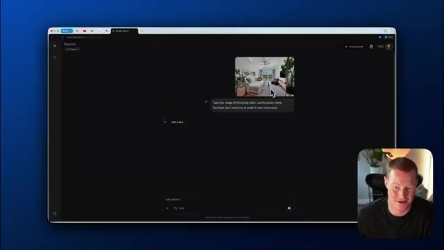
🔍 Agrandir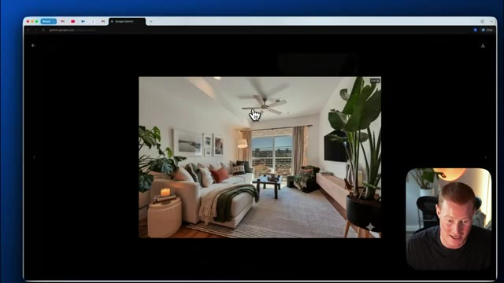
🔍 AgrandirIl y a ces lumières ici. Il y a ces couleurs douces et neutres. Ça a l'air beaucoup plus chaleureux que cette image originale que je lui ai donnée. Disons juste de rendre ça encore plus chaleureux. Je veux que ce soit tellement chaleureux que j'ai envie de faire une sieste. Pensez à ceci si vous essayez de concevoir l'intérieur de votre maison. Cela va potentiellement remplacer le besoin d'avoir un architecte d'intérieur. C'est parti. Ça a l'air encore plus chaleureux.
Interface & Outils : Interface web de Google Gemini (gemini.google.com) affichée dans un navigateur, avec une fenêtre vidéo du présentateur.
Contenu textuel & Code : Historique de chat avec des images de salon générées et du texte de prompt demandant de rendre l'image plus chaleureuse.
Action / Démonstration : Navigation et présentation de l'interface de génération d'images de Google Gemini pour modifier l'ambiance lumineuse d'un salon.
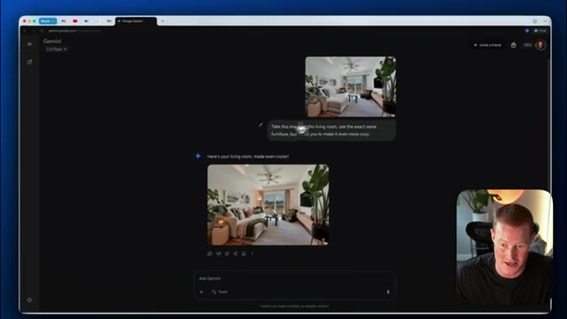
🔍 Agrandir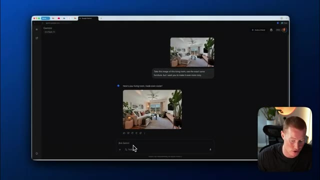
🔍 AgrandirJe veux dire, dès que je m'assois sur ce canapé, je vais avoir envie de faire une sieste. Donc c'est plutôt cool. Très bien. Maintenant, je m'amuse juste avec ça. Je lui ai dit de m'ajouter sur le canapé et il a fini par ajouter ceci. C'est plutôt marrant. À la place, je veux que tu en fasses une boisson réconfortante que je tiens réellement. C'est assez marrant, on dirait que je tiens vraiment, je ne sais même pas, une chope en verre ou un truc du genre qui est, tu sais, probablement du café, c'est assez hilarant. Mais les gars, c'est le nouveau Google Nano Banana, je n'y ai accès que depuis environ la dernière heure, alors je veux montrer des choses que j'ai pu faire avec. J'espère que vous avez tiré de la valeur de cette vidéo, je vais laisser un lien pour l'essayer ci-dessous, assurez-vous de vous abonner à la chaîne pour plus de contenu comme celui-ci, merci d'être restés là et à plus les gars.
Interface & Outils : Navigateur web affichant l'interface Google Gemini et une page de blog officielle.
Contenu textuel & Code : Interface utilisateur de chat de Gemini avec des exemples de modification d'image par prompt (Reimagine your photos with a prompt).
Action / Démonstration : Navigation sur le web et démonstration de l'outil de génération/modification d'images de Gemini.
dans la prochaine vidéo
Interface & Outils : Webcam / Vidéo YouTube standard sans interface technique.
Contenu textuel & Code : Aucun graphique, code, terminal ou donnée financière affiché (gros plan statique du présentateur).
Action / Démonstration : Le présentateur s'adresse à son audience.